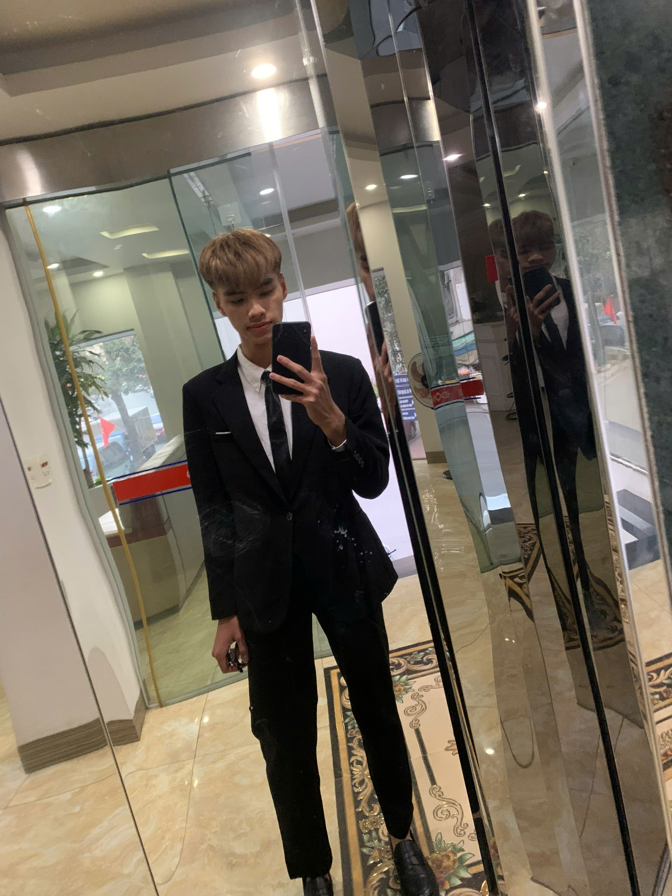

Đặng Sơn Hồng
Sinh viên chuyên ngành Kỹ thuật Robot tài năng, đam mê tự động hóa hệ thống nâng cao, thiết kế cơ điện tử và nghiên cứu ứng dụng trí tuệ nhân tạo thế hệ mới vào công nghệ số.

👤 Trang Giới thiệu
🎯 Về bản thân & Đam mê
Họ và tên: Đặng Sơn Hồng
Chuyên ngành: Kỹ thuật Robot – Trường Đại học Công nghệ, ĐHQGHN
Sở thích: Nghiên cứu cơ điện tử, lập trình hệ thống nhúng, tối ưu câu lệnh AI và chế tạo robot tự hành.
Bản thân em là một sinh viên luôn cầu thị và khao khát chinh phục những đỉnh cao mới trong học tập và nghiên cứu. Em ý thức sâu sắc rằng sự chăm chỉ, kỷ luật sắt đá và tư duy phản biện sắc bén chính là chiếc chìa khóa vạn năng để mở cánh cửa thành công trong kỷ nguyên số 4.0 toàn cầu.
🚀 Mục tiêu học tập & Định hướng
Mục tiêu học tập: Phát huy tối đa lợi thế tiếp thu nhanh các công nghệ số hiện đại, hoàn thành xuất sắc chương trình học phần, và tích cực tham gia các phòng thí nghiệm nghiên cứu robot ứng dụng thực tiễn.
Định hướng tương lai: Trở thành một Kỹ sư Robot xuất sắc có tư duy hệ thống nhạy bén, biết lắng nghe đa chiều, phối hợp hiệu quả trong đội ngũ và luôn đưa ra được các giải pháp tự động hóa đột phá.
📊 Ý nghĩa & Mục tiêu của Portfolio
Portfolio kỹ thuật số này được xây dựng nghiêm túc nhằm đáp ứng trọn vẹn yêu cầu của học phần "Nhập môn Công nghệ số và Ứng dụng Trí tuệ nhân tạo". Xa hơn thế, đây là cuốn nhật ký minh chứng rõ nét cho hành trình học tập, lưu trữ các sản phẩm số cá nhân xuyên suốt kỳ học, giúp em tự đánh giá năng lực số và tự tin khẳng định bản lĩnh cá nhân với thầy cô và bạn bè.
⚙️ Kỹ thuật & Công nghệ
Em đặc biệt say mê tìm tòi các hệ thống nhúng thông minh, lập trình vi điều khiển cốt lõi, cơ học máy hiện đại và phương thức mà Trí tuệ nhân tạo (AI) đang định hình lại toàn bộ ngành công nghiệp Robot thế kỷ 21.
💻 Danh mục bài tập thành phần
Dưới đây là 6 bài tập lớn được hệ thống hóa bài bản, minh chứng cho việc chuyển hóa lý thuyết thành kỹ năng thực chiến kỹ thuật số:
Bài 1 (Mục 1.4)
Thao tác cơ bản với tệp tin và thư mục
🎯 Mục tiêu bài tập
Nắm vững kiến trúc tổng thể của hệ thống máy tính, phân loại và hiểu rõ nguyên lý hoạt động của các thiết bị ngoại vi hiện đại. Từ đó, xây dựng và chuẩn hóa không gian làm việc số cá nhân một cách khoa học nhằm tối ưu hóa hiệu suất lưu trữ và tốc độ truy xuất dữ liệu.
🔄 Quá trình thực hiện & Sản phẩm cuối cùng
Trình bày cấu trúc thư mục tối ưu và quy tắc đặt tên tệp đã thiết lập, kèm ảnh chụp minh họa. Hệ thống hóa cây thư mục học tập logic theo môn học, đảm bảo tính khoa học và dễ quản lý.
Bài 2 (Mục 2.4)
Tìm kiếm và đánh giá thông tin học thuật
🎯 Mục tiêu bài tập
Làm chủ các kỹ năng tìm kiếm thông tin nâng cao (Advanced Search Techniques), sử dụng các toán tử và bộ lọc chuyên sâu để định vị dữ liệu học thuật chính xác.
🔄 Quá trình thực hiện & Sản phẩm cuối cùng
Trình bày kết quả tìm kiếm học thuật bằng các toán tử nâng cao và bảng đánh giá nguồn tin đã thực hiện theo tiêu chí CRAAP để thẩm định độ tin cậy của tài liệu.
Bài 3 (Mục 3.4)
Viết Prompt hiệu quả cho các tác vụ học tập
🎯 Mục tiêu bài tập
Hiểu rõ nguyên lý hoạt động của AI tạo sinh và phát triển kỹ năng Kỹ nghệ câu lệnh (Prompt Engineering) để áp dụng vào các bài tập nghiên cứu chuyên ngành.
🔄 Quá trình thực hiện & Sản phẩm cuối cùng
Trình bày sự so sánh trực quan giữa Prompt ban đầu và Prompt cải tiến cùng kết quả đầu ra thực tế thu được từ mô hình AI (như ChatGPT, Gemini).
Bài 4 (Mục 4.4)
Sử dụng công cụ hợp tác trực tuyến cho dự án nhóm
🎯 Mục tiêu bài tập
Ứng dụng hệ sinh thái điện toán đám mây và các phần mềm cộng tác trực tuyến để tối ưu hóa hiệu quả làm việc nhóm từ xa.
🔄 Quá trình thực hiện & Sản phẩm cuối cùng
Trình bày minh chứng chi tiết về việc sử dụng công cụ quản lý dự án nhóm (như Trello, Google Workspace) và phương thức điều phối luồng công việc khoa học.
Bài 5 (Mục 5.4)
Sử dụng AI tạo sinh để hỗ trợ sáng tạo nội dung
🎯 Mục tiêu bài tập
Phát triển tư duy thẩm mỹ, biên tập đa phương tiện và ứng dụng AI để tạo ra các ấn phẩm truyền thông số thu hút thị giác.
🔄 Quá trình thực hiện & Sản phẩm cuối cùng
Trưng bày sản phẩm nội dung số hoàn thiện (hình ảnh, video hoặc bài viết truyền thông) được đồng kiến tạo một cách sáng tạo dưới sự hỗ trợ đắc lực của AI.
Bài 6 (Mục 6.4)
Sử dụng AI có trách nhiệm trong học tập và nghiên cứu
🎯 Mục tiêu bài tập
Hiểu sâu sắc về liêm chính học thuật, sở hữu trí tuệ và xây dựng bộ lọc đạo đức khi làm việc với Trí tuệ nhân tạo.
🔄 Quá trình thực hiện & Sản phẩm cuối cùng
Trình bày bộ nguyên tắc cá nhân về sử dụng AI có trách nhiệm dựa trên các văn bản quy định hiện hành và nghiên cứu tình huống thực tế đã thực hiện.
📝 Trang Tổng kết
Nhìn lại toàn bộ hành trình xây dựng và hoàn thiện Digital Portfolio này, bản thân em tự hào vì đây không chỉ đơn thuần là một bài tập học phần cuối kỳ, mà là một trải nghiệm thực tế mang tính bước ngoặt. Quá trình này giúp em hệ thống hóa toàn bộ kiến thức số thu lượm được, đồng thời rèn luyện thói quen tự đánh giá và nâng cao năng lực bản thân một cách nghiêm túc.
💡 Những kiến thức và kỹ năng quan trọng nhất đã học được:
- Tư duy quản trị không gian số: Làm chủ kỹ năng sắp xếp tệp tin khoa học và lưu trữ điện toán đám mây đồng bộ.
- Năng lực khai thác & Thẩm định thông tin: Thành thạo các toán tử tìm kiếm chuyên sâu và bộ lọc CRAAP để tiếp cận nguồn dữ liệu chuẩn học thuật.
- Làm việc với AI thế mới: Hiểu bản chất và vận dụng linh hoạt Kỹ nghệ câu lệnh (Prompt Engineering) để biến AI thành người trợ lý đắc lực phục vụ nghiên cứu Robot.
- Kỷ luật và Liêm chính số: Luôn đề cao tinh thần tôn trọng bản quyền, ứng dụng công nghệ số và AI với một thái độ trách nhiệm, chuẩn mực đạo đức tối thượng.
Đó là việc tự tay cấu trúc và thiết kế nên một không gian số đồng bộ, nơi các sản phẩm số cá nhân của cả học kỳ được kết nối hài hòa. Nhìn thấy các bài tập rời rạc được hệ thống hóa chuyên nghiệp giúp em tự tin hơn rất nhiều vào năng lực số của bản thân.
Thách thức lớn nhất là việc biên tập và chắt lọc nội dung sao cho ngắn gọn nhưng vẫn đảm bảo đầy đủ chiều sâu học thuật theo yêu cầu. Đồng thời, việc tối ưu hóa giao diện trang web cũng đòi hỏi tính kiên nhẫn cao. Bằng tinh thần tự học và không ngừng thử nghiệm, em đã hoàn thiện dự án một cách trọn vẹn nhất.